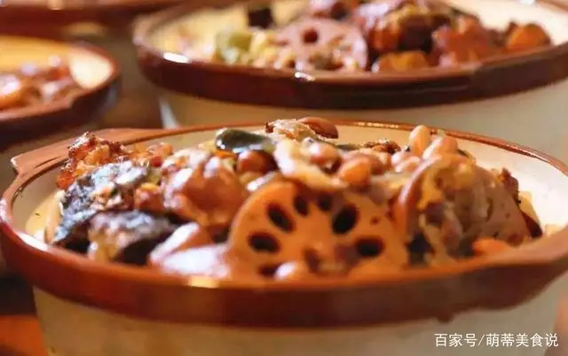
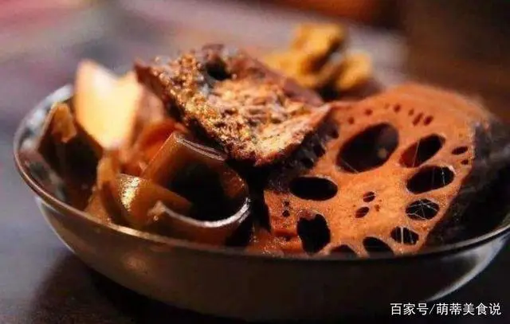
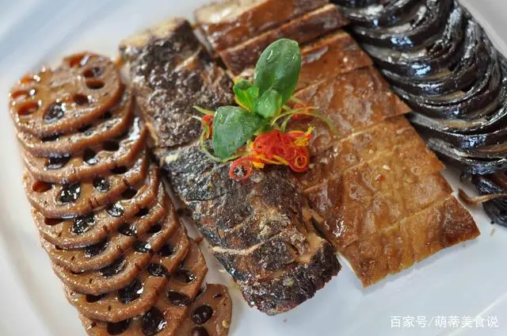

舌尖上的山东，不得不尝的济南美食酥锅，食材丰富，佐酒下饭皆可
发布时间: 2022-04-07 4859 次浏览
-
酥锅是山东济南的一道传统名菜，也是济南人春节必备的一道美食。其实酥锅的起源并不是济南，而是山东淄博博山区。
关于酥锅还有这么一个传说，相传在北宋年间，北宋大诗人苏轼去山东诸城任太守，在去往诸城的时候路过颜神店（也就是现在的博山区），在此购买陶瓷器皿，当时在购买陶瓷器皿的时候苏轼的妹妹从一位窑工那里得到了一份使用砂锅制作大锅菜的秘方，回来之后就给哥哥苏轼制作了一锅让其品尝。苏小妹在制作的时候对其配方进行了改动，将传统的混合放菜改成了层层叠放的方法。首先将白菜放在底部，然后放入猪肉、鱼、豆腐、海带、白菜等等，最后还在锅盖上放了一块石头压住。
可能是因为太累了，放好石头之后苏小妹就睡着了，等醒来的时候已经天亮了，砂锅也因为时间太长被火烤裂了，但里面的菜却完好无损，香气充满了整个院子，苏轼闻到之后便来到厨房，尝过之后对这道美食是赞不绝口。后来人们为了纪念苏小妹，于是便把这道菜的名字叫做“苏锅”，后来也因其酥烂可口，改称作“酥锅”，之后这一美食广为流传。
济南的酥锅是以肘子骨、五花肉、鸡、鱼、豆腐、海带、白菜、藕等为主要原料制作而成，其食材丰富，做法并不复杂，味道十分的鲜美，佐酒下饭皆可。
第一步：首先咱们将买回来的肘子骨清洗干净，焯水之后待用；五花肉洗净之后切片待用；鸡鱼处理清洗干净待用；再将海带浸泡好，藕洗净之后切片，其他食材全部处理好待用。
第二步：准备大锅，首先将肘子骨放入到锅中，然后再按照顺序一层一层的放入藕、海带、五花肉、白菜、鸡肉、鱼、白菜，顺序不要搞错哦。（ps：这里有一点要注意，在放鱼之前，鱼要用豆腐皮包起来，然后放在最顶层，上面再放上一层白菜，这样做是为了鱼不会被压碎）
第三步：食材全部放好之后，开中小火焖煮，然后放入适量的老抽、糖、醋、食盐、料酒等佐料。
第四步：待锅中出汤汁之后用勺子舀出一些待用，不要倒掉哦；等到锅中的汤汁差不多快干的时候然后再将其倒入到锅中，继续焖煮，时间大约是十个小时左右即可。
第五步：时间到，然后淋入适量的香油，再盖上盖子，将其焖上一夜的时间，第二天就可以享用了。
黄河文化旅游宣传平台
联系电话: 17753010787
版权所有：山东大学技术团队
技术支持：山东大学技术团队